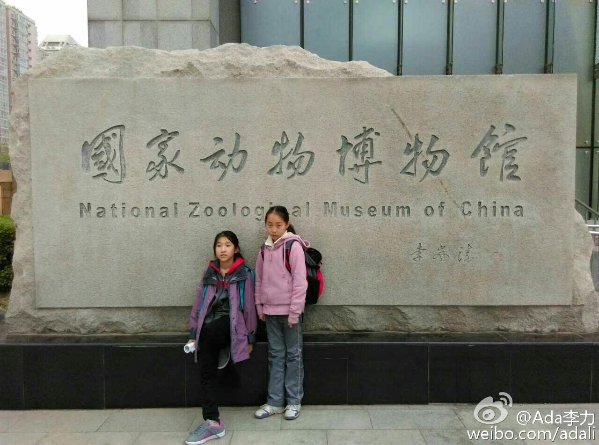
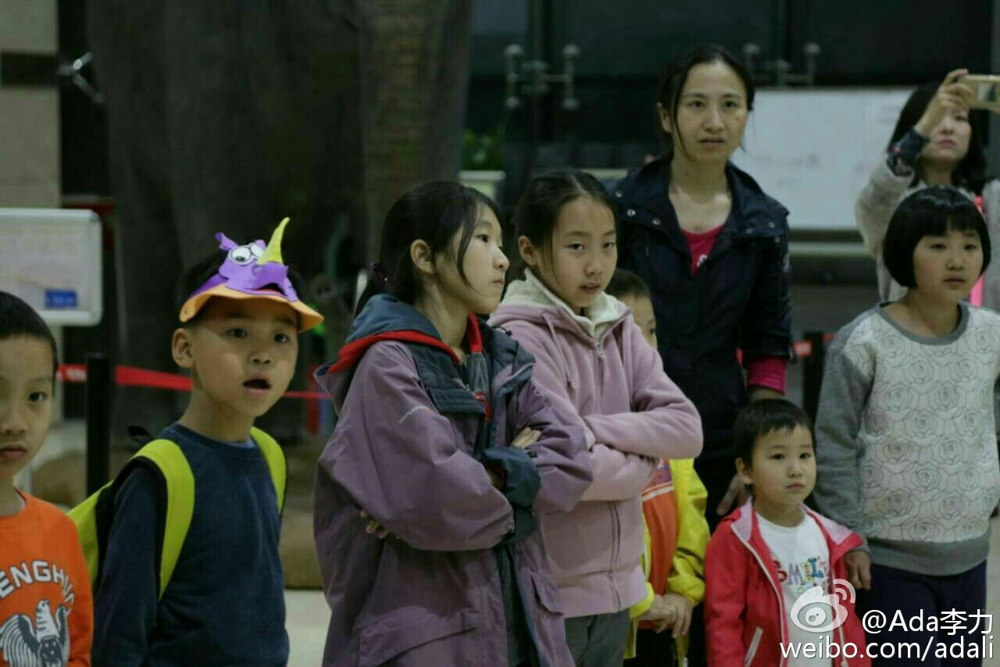
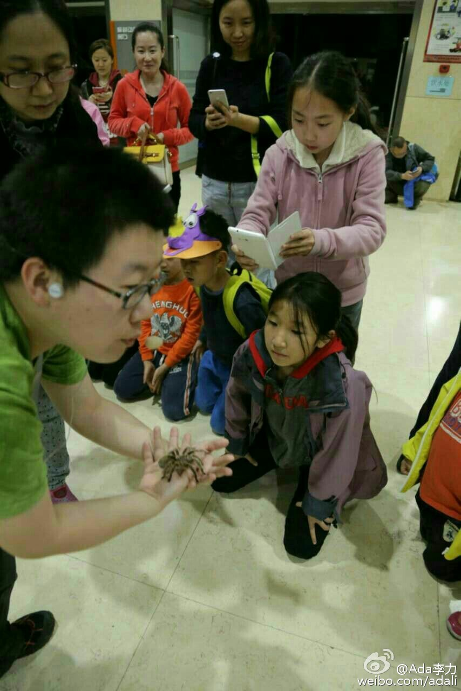
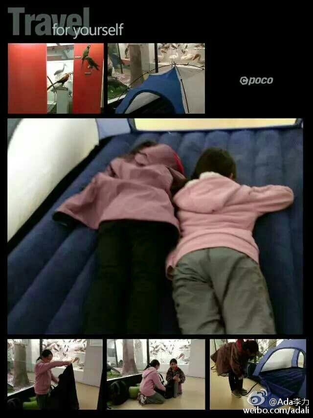

姣姣倒是喜欢动物，限于活的，所以当她问动物是活的还是标本时，我含糊其辞说应该有活动物吧。于是姣姣去了。 早晨接她回来时，问她玩得如何? 姣姣说:"还行"。她的口头禅式回应。@Ada李力:昨晚#姣姣#和璿璿参加了个国家动物博物馆的活动，在馆里搭帐篷住了一晚。这个活动创意估计来自电影<博物馆奇妙夜>。姣姣最近因为小升初的事情，被她爸爸搞得压力颇大，报完名后还说不去了要在家学习，我的兴致倒比她大，极力鼓动她去。 